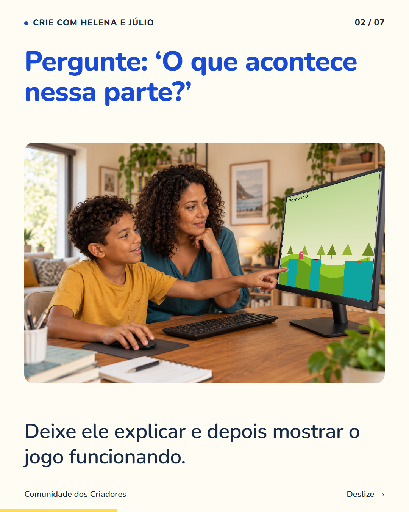
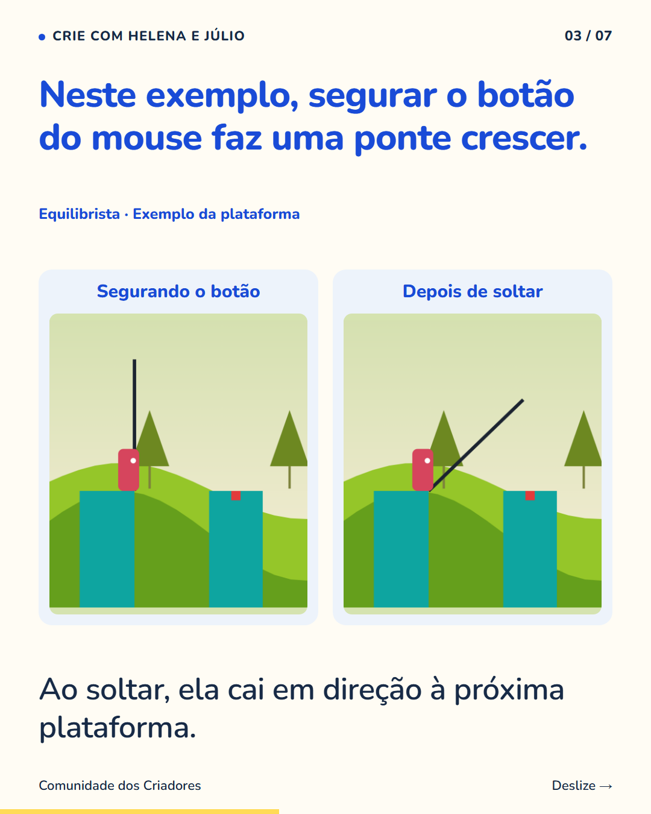
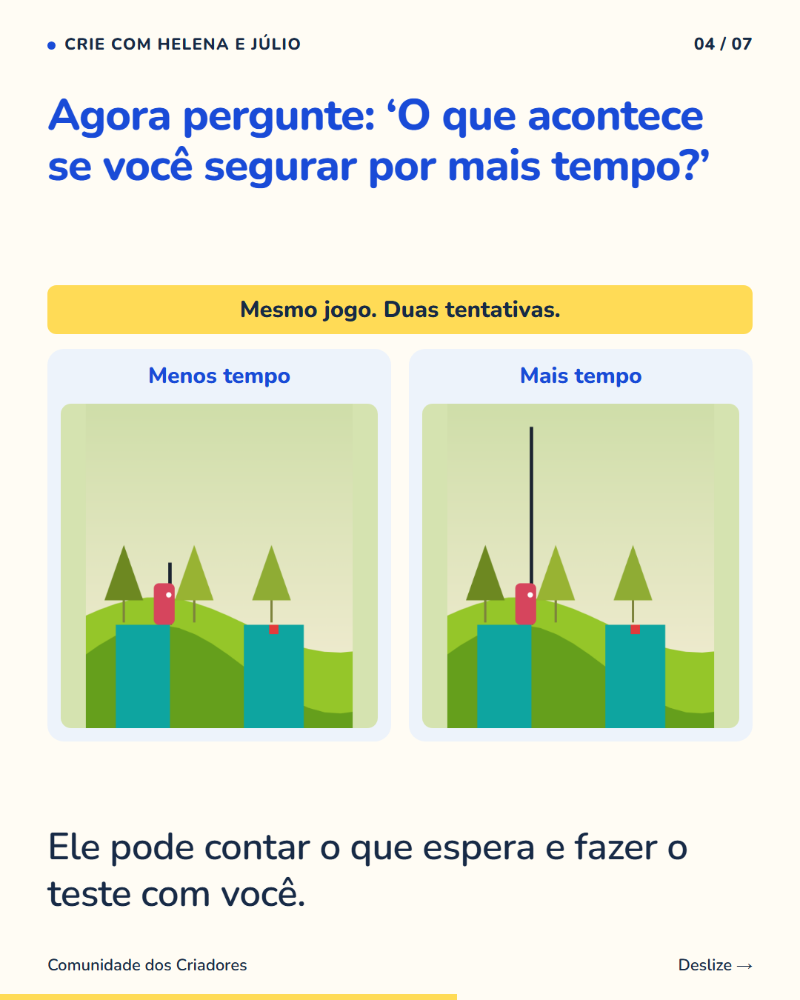
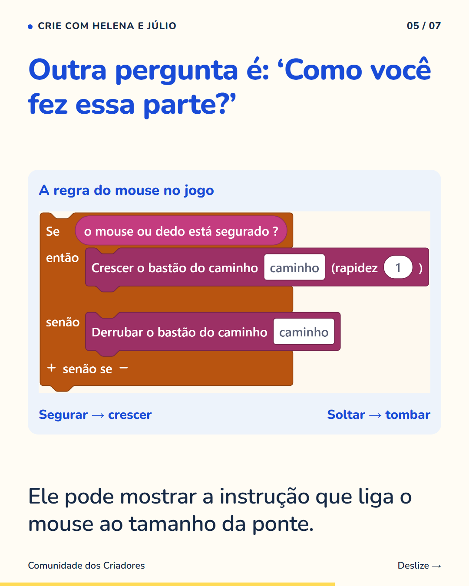
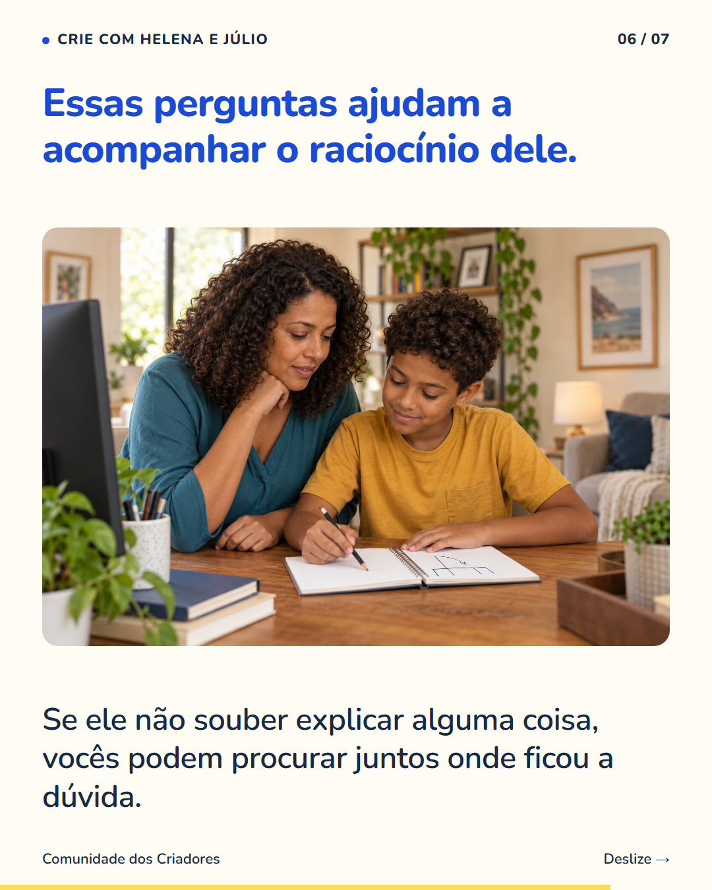
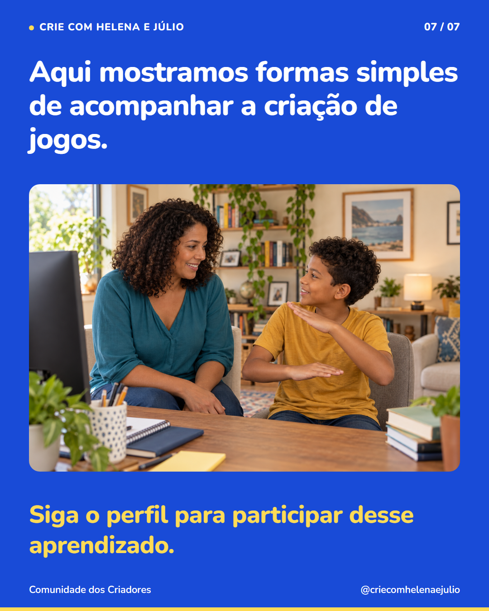

7 slides · 1080 × 1350 · Copy revisada · Perguntas em família e demonstração real do Equilibrista






Você pode começar a conversa pelo resultado que está vendo na tela. Peça para seu filho mostrar uma parte do jogo e contar o que faz ela funcionar. Depois, proponha um teste: ‘Se você segurar o botão por mais tempo, o que muda?’ Deixe ele pensar antes de testar. A conversa dá pistas sobre o que ele entendeu e sobre as dúvidas que ainda tem. Algumas crianças explicam melhor mostrando; outras precisam de tempo para organizar a resposta. Aproveite esse momento para ouvir, sem transformar cada pergunta numa cobrança. Siga o perfil para conhecer outras maneiras de acompanhar seu filho enquanto ele cria.